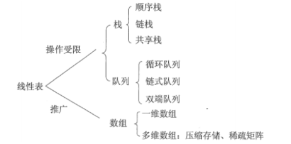
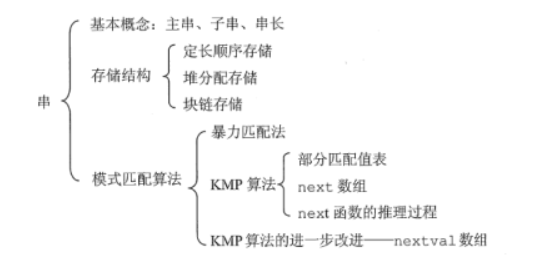
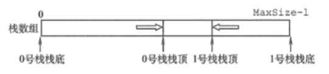
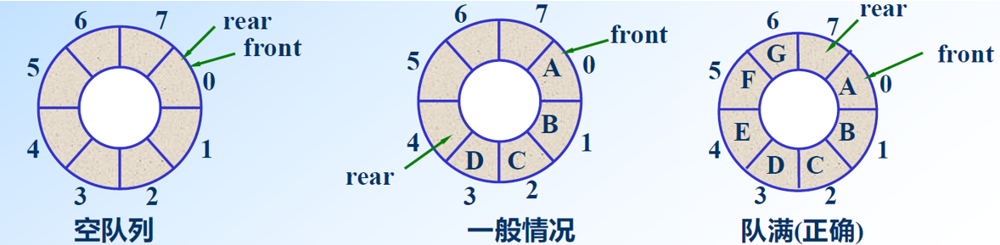
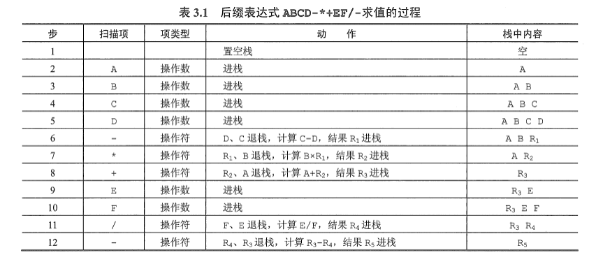
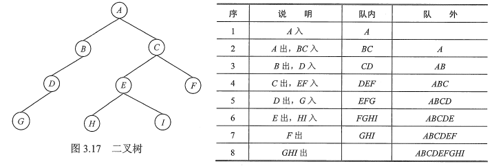
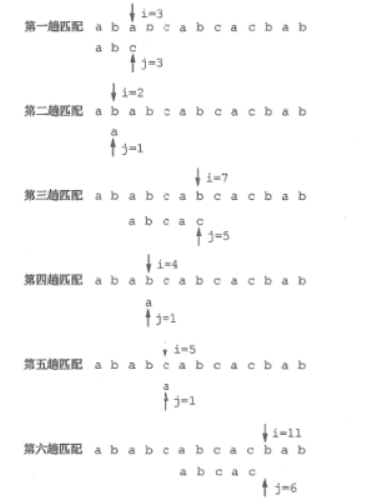
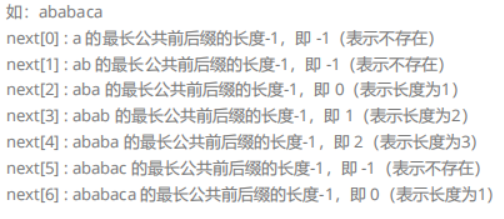
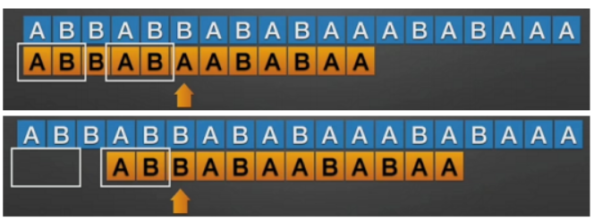

数据结构面经3：栈、队列和串


1 栈和队列的区别和存储结构
1.1 栈
定义：只允许在表尾（栈顶）进行插入和删除的线性表，“先进后出”
顺序栈：数组（存放栈中元素）、栈顶指针
链栈：栈顶是一个指针
1.2 队列
定义：只允许在表的一端（队尾）插入，在另一端（队首）删除的线性表，“先进先出”
顺序队列：数组（存放队列中元素）、头指针、尾指针
链式队列：队首指针、队尾指针
- 两个栈模拟一个队列：队列是先进先出，栈的是先进后出。同一组数据连续执行两次先进后出之后再出栈就可以实现队列的先进先出。
2 共享栈
利用栈底位置相对不变的特性，让两个顺序栈共享一个一维数组空间，将两个栈的栈底分别设置在共享空间的两端，两个栈顶向共享空间的中间延伸。这样能够更有效的利用存储空间，防止上溢。

3 如何区分循环队列是队空还是队满？
一般情况，队空和队满的判断条件都是Q.front == Q.rear，可以使用以下2种方法来进行区分：
（1）方法1：牺牲一个单元（即最后一个单元不存数据）来区分队空和队满
- 队空：
Q.front == Q.rear - 队满：
(Q.rear + 1) % MaxSize == Q.front - 元素个数：
(Q.rear - Q.front + MaxSize) % MaxSize

（2）方法2：队列结构体中增加一个Q.size表示元素个数
4 栈在括号匹配中的算法思想
设置一个空栈，顺序读入括号：
- 若是左括号，则进栈
- 若是右括号
- 若栈空，则匹配失败，右括号多余
- 否则，弹出一个栈顶的左括号
读完所有括号后：
- 若栈空，则表达式中括号匹配正确
- 否则，匹配失败，左括号多余
1 | bool check_brackets(string tokens) |
5 栈在后缀表达式求值中的算法思想
- 创建一个空栈，顺序扫描表达式的每一项
- 若该项是操作数，则将其压栈
- 若该项是操作符<op>，则连续从栈中pop出两个操作数Y和X，形成运算指令X<op>Y，并将计算结果重新压栈
- 当表达式的所有项都扫描完后，栈顶存放的就是最后的计算结果

6 栈在递归中的应用？
递归是一种重要的程序设计方法。简单地说，若在一个函数、过程或数据结构的定义中又应用了它自身，则这个函数、过程或数据结构称为是递归定义的，简称递归。
它通常把一个大型的复杂问题层层转化为一个与原问题相似的规模较小的问题来求解，递归策略只需少量的代码就可以描述出解题过程所需要的多次重复计算，大大减少了程序的代码量。
但在通常情况下，它的效率并不是太高。将递归算法转换为非递归算法，通常需要借助栈来实现这种转换。
7 队列在层次遍历中的作用？
在信息处理中有一大类问题需要逐层或逐行处理。这类问题的解决方法往往是在处理当前层或当前行时就对下一层或下一行做预处理，把处理顺序安排好，待当前层或当前行处理完毕，就可以处理下一层或下一行。使用队列是为了保存下一步的处理顺序。下面用二叉树层次遍历的例子，说明队列的应用。

8 队列在计算机系统中的应用？
队列在计算机系统中的应用非常广泛，以下仅从两个方面来简述队列在计算机系统中的作用：
- 解决主机与外部设备之间速度不匹配的问题
- 解决由多用户引起的资源竞争问题
对于第一个方面，仅以主机和打印机之间速度不匹配的问题为例做简要说明。主机输出数据给打印机打印，输出数据的速度比打印数据的速度要快得多，由于速度不匹配，若直接把输出的数据送给打印机打印显然是不行的。解决的方法是设置一个打印数据缓冲区，主机把要打印输出的数据依次写入这个缓冲区，写满后就暂停输出，转去做其他的事情。打印机就从缓冲区中按照先进先出的原则依次取出数据并打印，打印完后再向主机发出请求。主机接到请求后再向缓冲区写入打印数据。这样做既保证了打印数据的正确，又使主机提高了效率。由此可见，打印数据缓冲区中所存储的数据就是一个队列。
对于第二个方面， CPU (即中央处理器，它包括运算器和控制器）资源的竞争就是一个典型的例子。在一个带有多终端的计算机系统上，有多个用户需要CPU 各自运行自己的程序，它们分别通过各自的终端向操作系统提出占用CPU 的请求。操作系统通常按照每个请求在时间上的先后顺序，把它们排成一个队列，每次把CPU 分配给队首请求的用户使用。当相应的程序运行结束或用完规定的时间间隔后，令其出队，再把CPU 分配给新的队首请求的用户使用。这样既能满足每个用户的请求，又使CPU 能够正常运行。
9 矩阵的压缩存储
数据结构中，提供针对某些特殊矩阵的压缩存储结构。这里所说的特殊矩阵，主要分为以下两类：
- 含有大量相同数据元素的矩阵，比如对称矩阵；
- 含有大量 0 元素的矩阵，比如稀疏矩阵、上（下）三角矩阵；
针对以上两类矩阵，数据结构的压缩存储思想是：矩阵中的相同数据元素（包括元素 0）只存储一个。
10 串的模式匹配
子串的定位操作通常称为串的模式匹配，他求的是子串（常称模式串）在主串中的位置。
暴力模式匹配算法的思想：从主串的第一个字符起，与子串的第一个字符比较，相等则继续比较；不等则从主串的下一个位置起，继续和子串开始比较，直到最后看是否匹配成功。
以下的子串为：‘abcac’:

10.1 KMP算法
在暴力匹配中，每趟匹配失败都是模式后移一位再从头开始比较。而某趟已匹配相等的字符序列是模式的某个前缀，这种频繁的重复比较相当于模式串在不断地进行自我比较，这就是其低效率的根源。
因此，可以从分析模式本身的结构着手，如果已匹配相等的前缀序列中有某个后缀正好是模式的前缀，那么就可以将模式向后滑动到与这些相等字符对齐的位置，主串指针无须回溯，并继续从该位置开始进行比较。而模式向后滑动位数的计算仅与模式本身的结构有关，与主串无关。
先计算出$next next[i] s[0:i] next $数组只和子串有关，和主串无关

再基于$ next $数组，让子串和主串的每个字符进行匹配，当出现匹配失败时，如果已匹配相等的序列中有某个后缀正好是子串的前缀，那么可以直接将子串滑动到与这些相等字符对齐的位置。这利用了子串本身的最长公共前后缀信息，使得主串指针无须回溯。

假设主串长度为, 子串长度为，由于BF 算法中每趟匹配失败都是子串后移一位再从头开始比较，则BF 算法的时间复杂度为$ O(mn) O(m+n)$。
代码实现如下：
1 |
|
 微信
微信 支付宝
支付宝